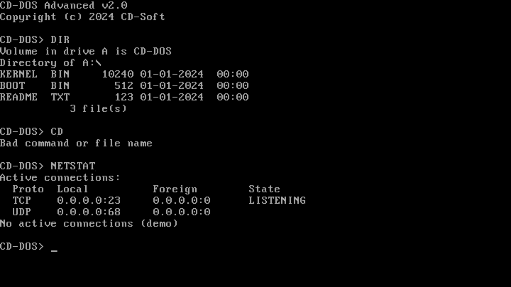
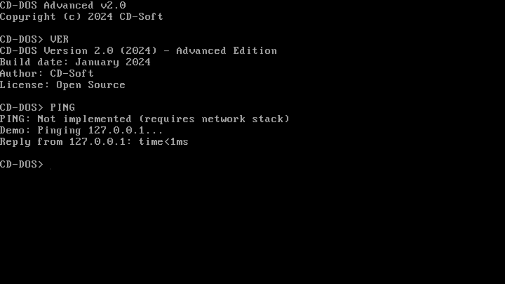
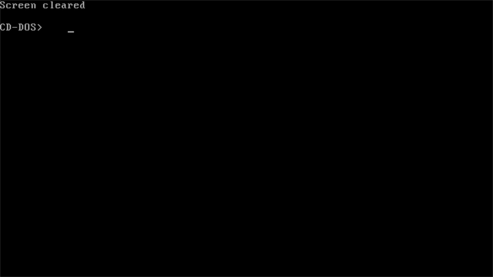

CD-DOS — это современная DOS-подобная операционная система, написанная на чистом Assembler. Она сочетает в себе ностальгию по классическим DOS-системам с современными возможностями мониторинга железа и управления системой.
Полностью написана на ассемблере x86 для максимальной производительности и минимального размера
Определение частоты CPU, температуры, информации о видеоадаптере и статуса портов
Поддержка FAT12, работа с файлами и директориями, управление атрибутами
Встроенная поддержка сетевых команд (PING, NETSTAT) и расширяемый стек



Версия 2.0 - Стабильный релиз
📥 Скачать CD-DOS.IMG (1.44 MB)📦 Размер: 1.44 MB | 📅 Дата: Январь 2024 | 📄 Лицензия: Open Source
🔗 MD5: 7f8e9d3c4b5a6f7e8d9c0b1a2f3e4d5c